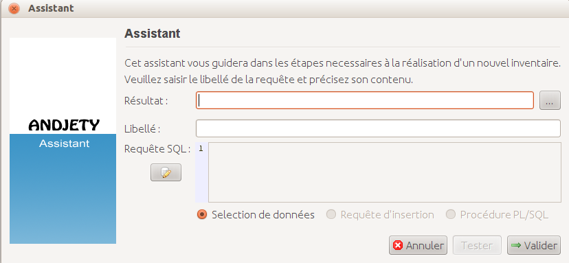
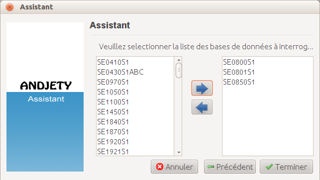

Créer une tâche
Une tâche permet de lancer un inventaire sur les bases de données précedemment créées. Afin de créer une tâche, cliquez sur le bouton  ce trouvant dans la barre d'outils. Le panneau de gestion des tâches va alors apparaitre :
ce trouvant dans la barre d'outils. Le panneau de gestion des tâches va alors apparaitre :

Cliquez maintenant sur ce bouton  afin d'ouvrir la fenêtre d'édition des tâches :
afin d'ouvrir la fenêtre d'édition des tâches :

Renseigner alors les champs demandés :
- Résultat : Chemin du dossier où sera créé le fichier comportant le ou les résultats de la requête
- Libellé : Nom de la tâche afin de permettre son identification
- Requête SQL : Requête SQL à exécuter
Cliquez sur afin de poursuivre la création de la tâche.

Sélectionnez les bases de données que vous souhaitez inclure dans votre inventaire, et cliquez sur "Terminer" afin finaliser la création de votre tâche.
Retour
© Paul Coiffier (2012) - SaphirSoftware.com